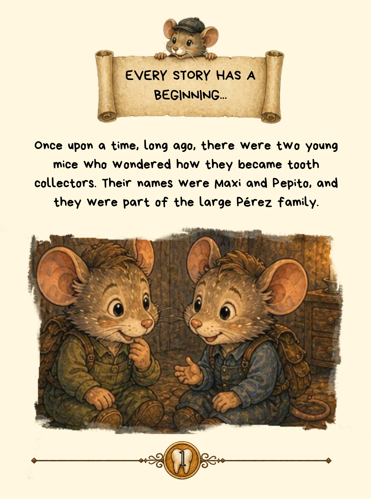
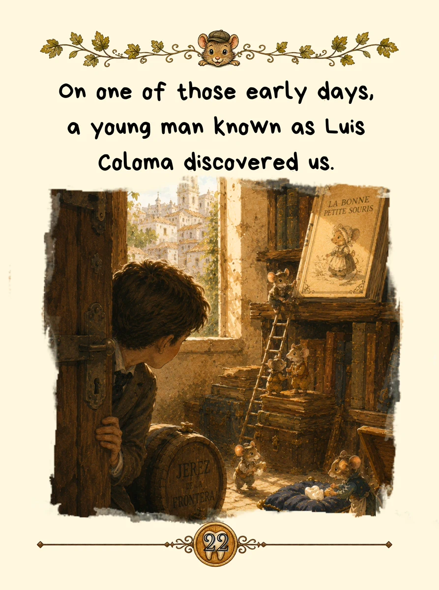
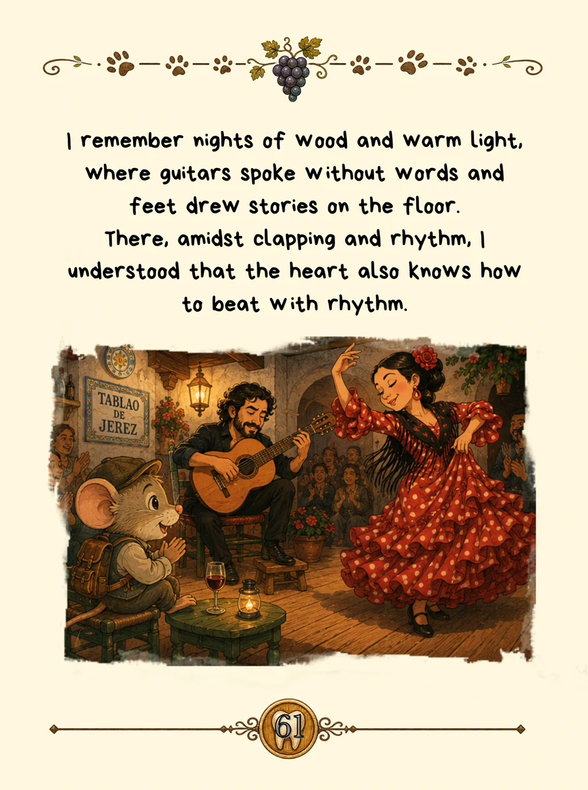
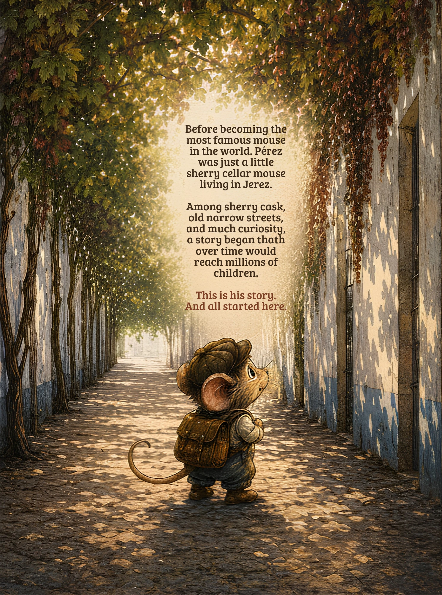

The Origin of the
Little Mouse Pérez
Before becoming the world's most famous mouse, Pérez was just a little mouse living in Jerez.
Among wine casks, old streets and endless curiosity, a story began that would eventually reach millions of children.
This is his story.
And it all began here.
EspañolIdioma original · 3 formatos disponibles
Tapa dura
Edición coleccionista
CONTENIDO EXCLUSIVO- 80 páginas
- Ilustraciones ampliadas
- Páginas para colorear
Tapa blanda
Edición clásica
- 40 páginas
- Ideal para leer en familia
Kindle
Edición digital
- 80 páginas
- Contenido ampliado
EnglishEnglish translation · 3 formats available
Hardcover
Premium edition
EXCLUSIVE CONTENT- 80 pages
- Extended illustrations
- Colouring pages
Paperback
Classic edition
- 40 pages
- Perfect for families
Kindle
Digital edition
- 80 pages
- Extended content
FrançaisTraduction française · 3 formats disponibles
Relié
Édition premium
CONTENU EXCLUSIF- 80 pages
- Illustrations étendues
- Pages à colorier
Broché
Édition classique
- 40 pages
- Idéal en famille
Kindle
Édition numérique
- 80 pages
- Contenu étendu
Inside the book
These five images offer a glimpse into Pérez's world. The hardback and Kindle editions include extended content and exclusive pages that are not included in the paperback edition.

The beginning of Pérez's story.
INTERIOR PAGE
A page from the story: the story of a young Luis Coloma.
INTERIOR PAGE
Jerez can also be heard, felt and danced.
EXCLUSIVE HARDCOVER · KINDLE
Jerez de la Frontera, where this story begins.
EXCLUSIVE HARDCOVER · KINDLEAnd for the little ones... there are colouring pages too!
EXCLUSIVE HARDCOVER · KINDLE
Before becoming the world's most famous mouse, Pérez was just a little mouse from Jerez.
BACK COVERWhat is The Origin of the Little Mouse Pérez?
If you are wondering what The Origin of the Little Mouse Pérez is or where the Tooth Fairy Mouse was born, this page invites you to discover a children's story inspired by tradition and Jerez de la Frontera.
The Origin of the Little Mouse Pérez is a story by Juan Manuel Vela Vacas that imagines Pérez's roots among wineries, wine casks and the streets of Jerez. A story for children and adults that turns a familiar tradition into an adventure full of magic.
Discover the literary tradition of the Little Mouse Pérez and how this character's story has reached us. A Spanish tradition with more than 100 years of history that has travelled around the world, now reimagined in a children's book by Juan Manuel Vela Vacas.
If you are searching for The Origin of the Little Mouse Pérez, this story invites you to discover a magical and literary version of its roots.
Want to know more about Pérez?
Discover the origin of his story and the questions many children ask when tooth night arrives.
ABOUT THE ORIGIN OF PÉREZ →A story born in Jerez.
The Origin of the Little Mouse Pérez and the story of Juan Manuel Vela Vacas have also been featured by Diario de Jerez.
The Little Mouse Pérez story born in Jerez
Discover the story behind the book and the project of Juan Manuel Vela Vacas in Diario de Jerez.
READ THE ARTICLE →Discover more stories
If you enjoyed Pérez's adventure, explore the author's other books.